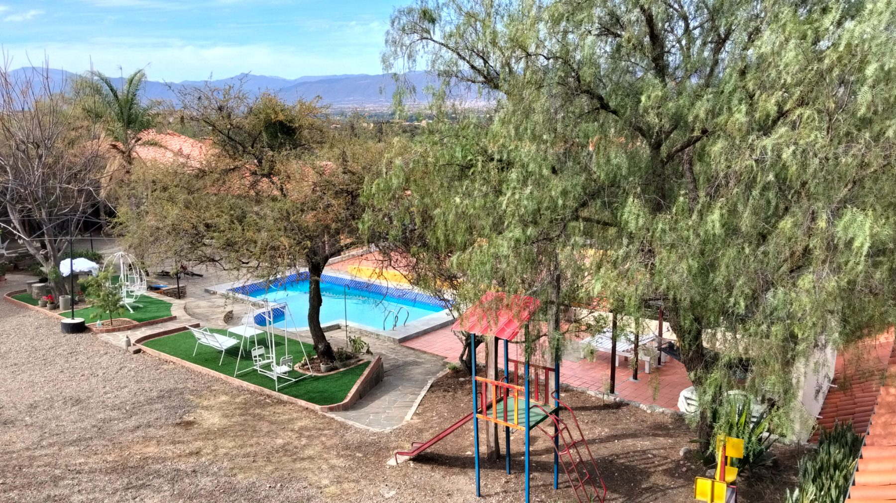

Espacio 01
Piscina al aire libre
Una piscina rodeada de verde para refrescarse en los días de sol, con solárium y reposeras. El punto de encuentro perfecto para las tardes de verano en familia.
- Solárium y reposeras
- Uso compartido, en temporada
- Ideal para venir en familia